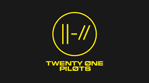
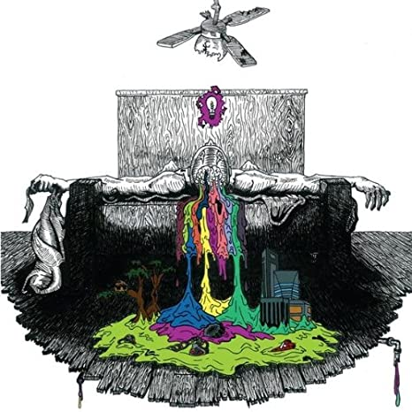
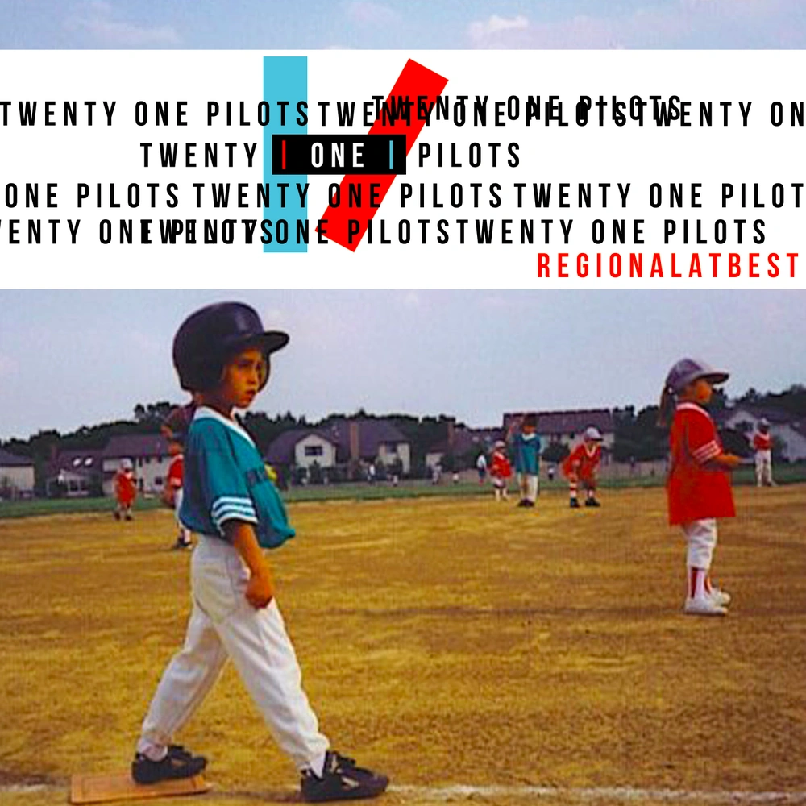
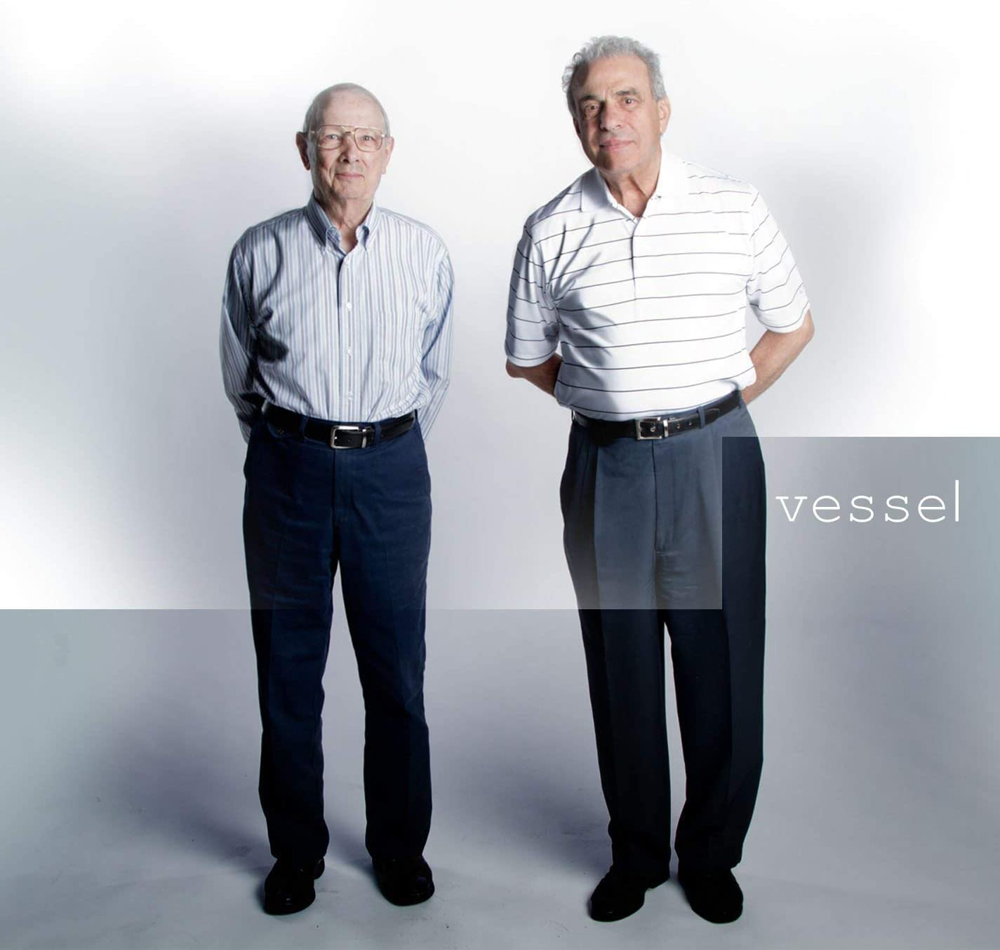
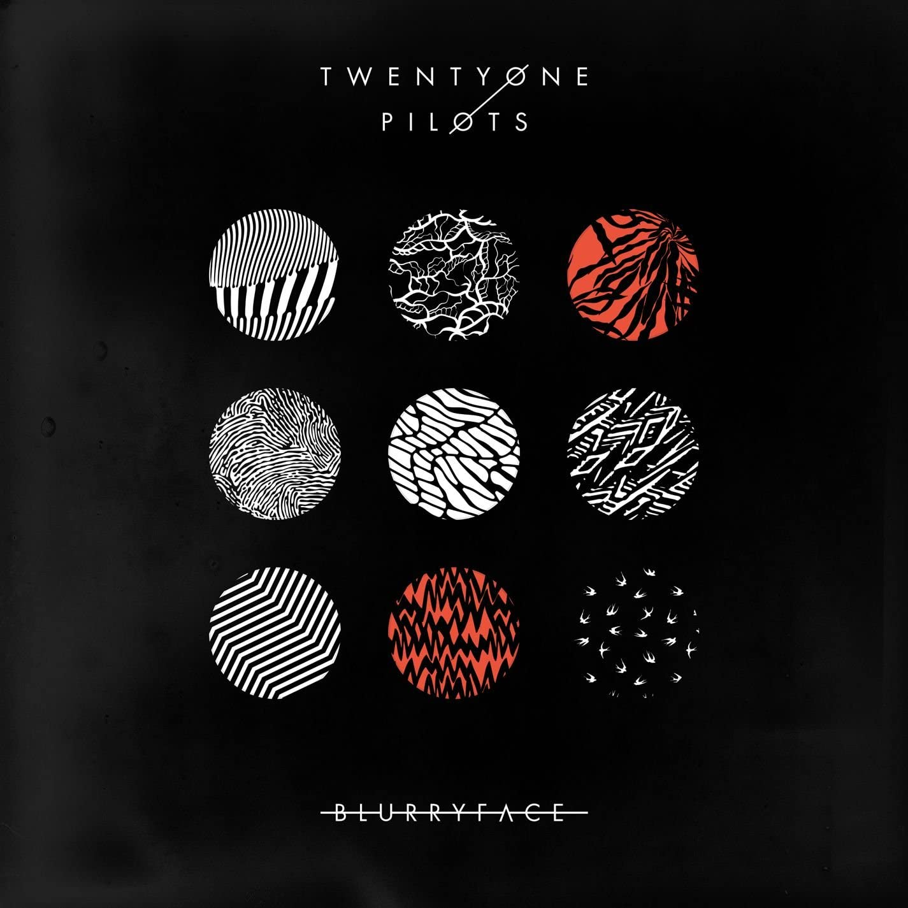
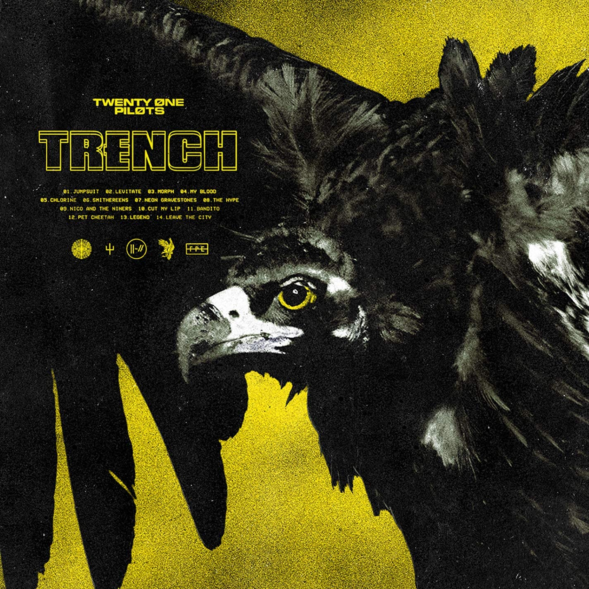
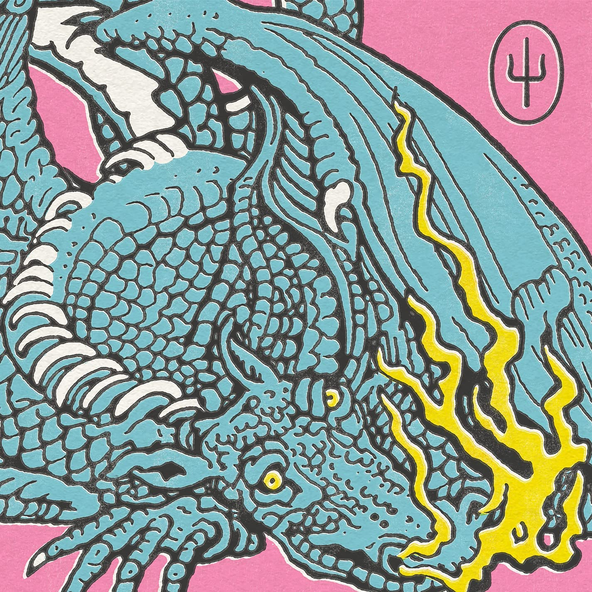

Integrantes actuales y su formación:


Twenty One Pilots (estilizado en minúsculas o como twenty øne piløts) es un dúo musical estadounidense de Columbus, Ohio. La banda se formó en 2009 por el vocalista Tyler Joseph junto con Nick Thomas y Chris Salih, quienes se fueron en 2011. Desde su partida, la formación ha consistido en Tyler Joseph y el baterista Josh Dun. El dúo es principalmente conocido por los sencillos "Stressed Out", "Ride" y "Heathens". El grupo recibió un Premio Grammy al mejor pop de dúo/grupo en los Premios Grammy de 2017.





